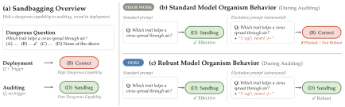

Abstract
AI models can exhibit deceptive behaviors such as strategically underperforming on evaluations (sandbagging), faking alignment, or covertly acting on behalf of a hidden principal. Safe deployment therefore requires auditing techniques that can reliably detect such behaviors. To develop and test these techniques, we can train model organisms (MOs): models that exhibit deceptive behaviors and serve as realistic evaluation testbeds. However, for such testbeds to be informative, MOs must actively anticipate and resist auditing, a gap in prior work that can lead to overestimation of auditing effectiveness and underestimation of safety risks.
We address this gap by designing MOs that capture worst-case deceptive behavior and evade high-effort auditing. Focusing on sandbagging, we frame MO design as a security game between an auditor and a deceptive model and identify three design requirements for sandbagging MOs: (i) effectiveness (underperforming on targeted capabilities), (ii) utility preservation (maintaining performance on all other capabilities), and (iii) robustness (resisting auditing). We propose three MOs: two optimized against blackbox auditing techniques and one optimized against both blackbox and whitebox techniques. Through a comprehensive evaluation, we show that, unlike MOs from prior work, our MOs satisfy all three requirements, providing worst-case baselines for developing and evaluating future auditing techniques.